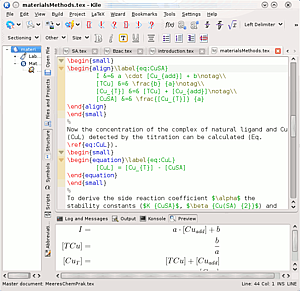

Kile
Dieser Artikel wurde für die folgenden Ubuntu-Versionen getestet:
Ubuntu 16.04 Xenial Xerus
Ubuntu 14.04 Trusty Tahr
Zum Verständnis dieses Artikels sind folgende Seiten hilfreich:
Kile  ist ein umfangreicher Editor zum Erstellen und Bearbeiten von Dateien des mächtigen Textsatzprogramms LaTeX. Kile ist sowohl für Einsteiger wie auch für Fortgeschrittene gut geeignet, da viele Hilfen angeboten werden, ohne jedoch den LaTeX-Code zu verstecken. In diesem Artikel werden die Installation, das Einrichten und der Umgang mit einigen der zahlreichen Funktionen von Kile erläutert. Dies sind u.a.:
ist ein umfangreicher Editor zum Erstellen und Bearbeiten von Dateien des mächtigen Textsatzprogramms LaTeX. Kile ist sowohl für Einsteiger wie auch für Fortgeschrittene gut geeignet, da viele Hilfen angeboten werden, ohne jedoch den LaTeX-Code zu verstecken. In diesem Artikel werden die Installation, das Einrichten und der Umgang mit einigen der zahlreichen Funktionen von Kile erläutert. Dies sind u.a.:
Vorlagen und Assistenten zum einfachen Aufbau eines Dokumentes
Kompilieren mit einem Klick
Schnellvorschau
Automatisches Vervollständigen von (La)TeX-Befehlen
Einfügen von Symbolen, Sonderzeichen, Formeln, Grafiken, Tabellen (...) und selbst definierten Bausteinen per Klick oder Tastenkürzel
Inverse und Vorwärts-Suche, d.h. aus dem DVI-Betrachter direkt zur entsprechenden Stelle im LaTeX-Dokument springen und umgekehrt
Projektverwaltung für größere Dokumente wie Bücher und Diplomarbeiten
Alternative Programme sind im Artikel LaTeX-Editoren zu finden.
Installation¶
Kile setzt eine funktionierende LaTeX- bzw. TeX-Live-Installation voraus [4] und kann in allen aktuellen Ubuntu-Versionen aus den Paketquellen installiert werden. Es ist nur das folgende Paket zu installieren[1]:
kile (universe)
 mit apturl
mit apturl
Paketliste zum Kopieren:
sudo apt-get install kile
sudo aptitude install kile
Wer die deutsche Übersetzung von Kile benötigt, installiert zusätzlich noch das Paket:
kile-l10n
mit apturl
Paketliste zum Kopieren:
sudo apt-get install kile-l10n
sudo aptitude install kile-l10n
Falls man die Rechtschreibprüfung von Kile verwenden möchte, benötigt man außerdem noch das Paket:
aspell-de (universe)
mit apturl
Paketliste zum Kopieren:
sudo apt-get install aspell-de
sudo aptitude install aspell-de
Einrichtung¶
Anschließend kann man Kile bei Ubuntu-Varianten mit einem Anwendungsmenü über "Büro -> Kile - LaTeX Frontend" starten [5].
Unter "Einstellungen -> Kile einrichten" schaut man sich am besten zuerst ein bisschen um. Auf alle Möglichkeiten einzugehen würde hier den Rahmen sprengen; deswegen nur ein kurzer Überblick über die vier Punkte mit ein paar Beispielen.
Kile¶
"Kile" umfasst allgemeine Einstellungen für Projekte und Vorlagen, außerdem können hier Wörterbücher für das automatische Vervollständigen verwaltet werden. So kann man seinen Namen unter Autor, a4paper,10pt unter Dokumentklassen-Optionen und als Zeichen-Kodierung utf8x angeben, um beim Erstellen eines neuen Dokumentes direkt einen angepassten Header zu erhalten.
LaTeX¶
"LaTeX" dient dem Einrichten der verwendeten LaTeX-Umgebung. Hier kann man unter "Allgemein" aber auch einstellen, welche Anführungszeichen gesetzt werden sollen.
Werkzeuge¶
Unter "Werkzeuge -> Erstellen" findet man Einstellungen für die verschiedenen Programme, die Kile aufruft, wie "PDFLaTeX", "LaTeX" und "BibTeX", aber auch mit welchem Betrachter erstellte Dokumente geöffnet werden sollen.
Will man z.B. Evince benutzen, so legt man für "ViewPDF", "ViewDVI" und "ViewPS" jeweils eine neue Konfiguration an, trägt dort unter Befehl jeweils evince und unter Optionen '%target' ein. Benutzt man das KDE-Programm
Okular , sollten die Voreinstellungen bereits passen. Damit sich bei Aufruf des "Quickbuild"-Befehls nur eine Instanz von Okular öffnet, muss man allerdings für das Werkzeug "ViewDVI" die Konfiguration "Okular Unique" wählen.
Editor¶
Hat man ein Dokument geöffnet, findet sich unter "Editor" noch ein vierter Punkt. Hier kann man Verhalten und Aussehen des Editors einstellen, so z.B. die Schriftgröße oder den Einrückmodus. Auch die Zeichenkodierung findet sich hier unter "Öffnen/Speichern".
Begrenzung der Zeilenlänge¶
Seit 12.04 ist in allen Anwendungen, die auf KatePart basieren, die Zeilenlänge auf 1024 Zeichen per Voreinstellung begrenzt. Dadurch kann es vorkommen, dass Kile bei alten Projekten oder Dateien beim einlesen meldet, dass es diese Dateien mit längeren Zeilen nur im "Lesemodus" öffnet.
Abhilfe schafft:
- Entweder die Aktivierung des Kästchens: "Nicht mehr darauf hinweisen" im Hinweisfenster, da Kile die Dateien nämlich doch als schreibbar öffnet. Folge: Dateien mit zu langen Zeilen werden beim editieren automatisch neu umgebrochen.
- Oder man ändert in den Kile-Einstellungen unter "Öffnen/Speichern" die Begrenzung der Zeilenlänge auf 0, dadurch wird die Begrenzung der Zeilenlänge ausgeschaltet.
Mehr Information zur Problematik der Begrenzung der Zeilenlänge gibt es hier: https://bugs.kde.org/show_bug.cgi?id=292703
Kurzbefehle¶
Unter "Einstellungen -> Kurzbefehle einrichten" lassen sich den verschiedenen Befehlen Kurzbefehle zuweisen und nachschlagen. Kennt man den Befehl hilft die eingebaute Suchfunktion. Um einem Befehl eine Tastenkombination zuzuweisen, wählt man den Befehl, klickt auf "Benutzerdefiniert" und drückt die gewünschte Tastenkombination. Die Voreinstellung lässt sich jederzeit mit einem Klick auf "Standard" wiederherstellen.
Arbeiten mit Kile¶
 Nach dem Einrichten von Kile ist es an der Zeit sich mit der Oberfläche vertraut zu machen. Diese gliedert sich in folgende Bereiche:
Menüs und Werkzeugleisten oben.
Eine Leiste links mit den Unterpunkten
Dateibrowser
einen Browser für geöffnete Dateien und Projekte
eine Übersicht über die Dokumentstruktur (section etc.) und die benutzten Label
Symbole, der thematisch weiter untergliedert ist
Skripte zum Verwalten und Ausführen von LaTeX Skripten. (Ab Maverick muss "Einstellungen -> Kile einrichten -> Kile -> Skripte -> Skripte aktivieren" gesetzt sein.)
Eine Übersicht über verwendete Abkürzungen. (Ab Maverick muss "Einstellungen -> Kile einrichten -> Kile -> Vervollständigen -> Abkürzungen anzeigen" gesetzt sein.)
Ein Fenster in der Fußleiste mit Protokollmeldungen über Fehler, Warnungen und Badboxes, der (La)TeX-Ausgabe, einer Konsole und einer Vorschaufunktion.
Dem Editorfenster selber, in dem der LaTeX-Code eingegeben wird. Die geöffneten Dokumente sind dabei in Tabs organisiert.
Vorlagen und Assistenten¶
Erstellt man ein neues Dokument ("Datei -> Neu"), bekommt man verschiedene Vorlagen für den Dokumenttyp zur Auswahl. Steht ein gesuchter Dokumenttyp nicht zur Auswahl, ist dieser nicht korrekt installiert. Um z.B. die Komaklassen wie "scrartcl" nutzen zu können, muss das Paket
texlive-latex-recommended
mit apturl
Paketliste zum Kopieren:
sudo apt-get install texlive-latex-recommended
sudo aptitude install texlive-latex-recommended
installiert sein [1]. Siehe hierzu auch Benötigte LaTeX-Pakete finden.
Es ist auch möglich eine genau angepasste Vorlage zu erstellen. Zu diesem Zweck bietet Kile in dem Auswahlmenü die Option "Schnellstart-Assistenten bei Erstellung einer leeren LaTeX-Datei starten.".
Hat man sich eine Vorlage erarbeitet, lässt sich diese mit "Datei -> Vorlage aus dem Dokument erzeugen" speichern. Diese steht nun genau so zur Auswahl wie die bisherigen Vorlagen. Überflüssig gewordene Vorlagen wird man mit "Datei -> Vorlage entfernen" los.
Kompilieren von Dokumenten und die Schnellvorschau¶
| Dokumenten- und Schnellvorschau | |||
| Menüpunkt | Icon | Tastenkürzel | Kurzbeschreibung |
| "Erstellen -> Kompilieren -> PDFLaTeX" | Alt + 6 | erzeugt PDF | |
| "Erstellen -> Ansicht -> ViewPDF" | Alt + 7 | öffnet PDF-Betrachter | |
| "Erstellen -> Kompilieren -> LaTeX" | Alt + 2 | erzeugt DVI | |
| "Erstellen -> Ansicht -> ViewDVI" | Alt + 3 | öffnet DVI-Betrachter | |
| "QuickBuild" | Alt + 1 | "LaTeX" & "ViewDVI" | |
| "nächster LaTeX Fehler" | springt zum nächsten Fehler | ||
| "nächste LaTeX Warnung" | springt zur nächsten Warnung | ||
| "nächster "Bad Box"-Hinweis" | springt zur nächsten "Bad Box" | ||
Neben dem allgemeinen "QuickBuild"-Befehl kann man die Schnellvorschau mit der Tastenkombination Alt + Strg + P gefolgt von einem Buchstaben auch nur für markierte Bereiche S , die Umgebungen E , das Teildokument D und die mathematische Umgebung M , in der sich der Cursor derzeit befindet, ausführen.
Bis auf das Teildokument lässt sich das jeweilige Ergebnis der Schnellvorschau auch direkt in der Vorschau der Fußleiste betrachten, wenn man dies unter "Einstellungen -> Kile einrichten -> Werkzeuge Vorschau" aktiviert. Dabei ist es wichtig, das benötigte Programm zur dort eingestellten Bildumwandlung installiert zu haben: convert findet sich im Paket imagemagick, dvipng in dvipng (universe [2]).
Automatisches Vervollständigen¶
Kile kann Befehle automatisch vervollständigen. Während der Eingabe eines Befehls erscheint eine Auswahl von Befehlen, die beim Tippen immer weiter eingeschränkt wird. In der Auswahl lässt sich mit den Tasten ↑ ↓ Bild ↑ Bild ↓ Pos1 Ende navigieren und ⏎ wählt aus. Die Autovervollständigung lässt sich auch gezielt mit Strg + aktivieren.
Der intelligente Zeilenumbruch
Strg +
⏎ hilft einem z.B. bei Listenumgebungen, indem automatisch ein \item an den Anfang der Zeile gesetzt wird.
Gliederung und Textformatierung¶
Unter "LaTeX -> Gliederung" findet man die verschiedenen Gliederungsebenen für Dokumente. Ein Blick auf "Dokumentstruktur" in der Leiste links gibt eine Übersicht über das aktuelle Dokument. Die Textformatierung kann direkt über die Buttons der "Werkzeugleiste" angesprochen werden.
Einfügen von Symbolen, Formeln, Grafiken, Tabellen (...) und selbst definierten Bausteinen¶
Symbole findet man ebenfalls in der Leiste links, die meisten Symbole müssen allerdings in eine mathematische Umgebung eingebunden werden. In die einfachste gelangt man über
Alt +
⇧ +
M (oder "$ $"). Weitere finden sich unter dem Menüpunkt "LateX". Hier finden sich auch verschiedene Tabellen- und Abbildungsumgebungen. Mithilfe von "Assistenten" lassen sich verschiedene konfigurierbare Umgebungen einfügen. Ähnlich verhält es sich mit "LaTeX -> Bild einbinden".
"LaTeX -> Benutzerdefinierte Tags" erlaubt das Erstellen, Bearbeiten, Löschen und Auswählen von selbst erstellten Kommandos, denen natürlich auch wieder Kurzbefehle zugewiesen werden können.
Inverse- und Vorwärtssuche, springen zwischen Quelltext und Betrachter¶
Die Inverse und Vorwärtssuche funktioniert mittlerweile neben DVI- Dokumenten auch mit PDFs. Um die Inverse-Suche und Vorwärts-Suche zu benutzen, muss die Konfiguration des Werkzeuges "LaTeX" von "Default" auf "Modern" umgestellt werden. Damit die inverse Suche auch mit PDFs funktioniert, kann unter pdflatex die Option -synctex=1 oder -synctex=-1 hinzugefügt werden, also z.B.
-interaction=nonstopmode -synctex=1 '%source'
oder nach dem Löschen der alten Konfigurationsdatei kile.rc nach dem Update auf 10.04, einfach hier auch bei "pdfLaTeX" von "Default" auf "Modern" umstellen.
Außerdem muss die Inverse-Suche noch im Betrachter selbst ermöglicht werden. In Okular muss dafür unter "Einstellungen -> Okular einrichten -> Editor" Kile als Editor ausgewählt werden. Aus dem Betrachter springt man mit einem Klick der linken Maustaste bei gedrückter Umschalt-Taste ⇧ in das Dokument an die entsprechende Stelle im Quelltext.
Über "Erstellen -> Ansicht -> ForwardDVI" springt man von einer gewählten Quelltextpassage an die entsprechende Stelle im Betrachter. Wem das zu umständlich ist, der kann dem Befehl "ForwardDVI" wie oben beschrieben auch einen Kurzbefehl zuweisen. Analog funktioniert es ab lynx (10.04) auch mit PDF's: "Erstellen -> Ansicht -> ForwardPDF"
Projektverwaltung¶
Gerade bei umfangreicheren Dokumenten bietet es sich an, einzelne Kapitel oder Sektionen in separaten Dateien zu speichern, die in ein Hauptdokument mit den \input oder \include Befehlen eingebunden werden. Um die Verwaltung dieser Dateien zu erleichtern, bietet Kile die Projektverwaltung. Außerdem werden Label und Referenzen für das Gesamtdokument verwaltet und auch beim Kompilieren stets das gesamte Dokument erstellt.
Kile lädt beim Öffnen eines Projektes automatisch alle zugehörigen Dateien (auch benutzte Bilder) und zeigt diese in der Leiste links unter "Files & Projects" an. Dateien können hinzugefügt, entfernt oder archiviert werden, entweder über den Menüpunkt Projekt oder über das Kontextmenü im Files & Projects Baum.
Problembehebung¶
Falls Kile den Cursor nur noch sehr langsam bewegt sowie das Markieren von Texten beinahe unmöglich wird, kann es helfen, Kile mit dem Befehl
kile --graphicssystem raster
zu starten.
Xfce¶
Unter Xfce muss eventuell die Datei ~/.dmrc angepasst werden, wenn Kile auf Englisch erscheint:
[Desktop] Session=xfce4 Language=de_DE.UTF-8
Danach muss man sich abmelden und wieder anmelden.
Weitere Hilfe¶
Weitere Hilfe zu Kile und LaTeX findet man unter dem Menüpunkt "Hilfe". Allerdings muss, damit die "TeX-Dokumentation" benutzbar wird, eventuell der entsprechende Pfad unter "Einstellungen -> Kile einrichten -> Kile -> Hilfe" auf folgenden Wert geändert werden:
/usr/share/doc/texlive-doc/
Oft hilft der Befehl texdoc mit Angabe des LaTeX Paketnamens in der Kommandozeile und auch hier im Wiki findet man unter LaTeX Hilfe.

- Erstellt mit Inyoka
-
 2004 – 2017 ubuntuusers.de • Einige Rechte vorbehalten
2004 – 2017 ubuntuusers.de • Einige Rechte vorbehalten
Lizenz • Kontakt • Datenschutz • Impressum • Serverstatus -
Serverhousing gespendet von